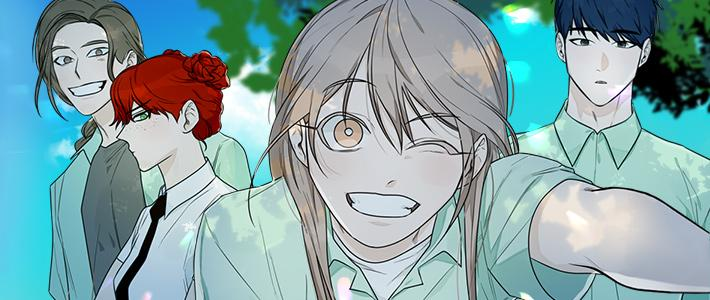

<a href="javascript:history.back()">뒤로가기</a><br><hr><br>
    <h1>개가 사는 학교</h1>
    <div style="margin-bottom:20px; border:1px solid #761f1f; background:#ff3331; color:#fff; padding:10px;">* 이 자료는 위키독의 서비스 중단에 따라 여성위키를 백업하는 절차로 진행되었습니다.<br>
     원본 페이지 주소 : <a href="http://ko.womwiki0308.wikidok.net/wp-d/5e6b181d9cab8c28093f91a4/View" target="_blank" rel="nofollow">http://ko.womwiki0308.wikidok.net/wp-d/5e6b181d9cab8c28093f91a4/View</a><br>
     마지막 기여자 : eunji13015<br>
     마지막 수정일 : 2020-03-13 14:20:00
    </div><br>
<div class="col-md-12 col-sm-12"><p></p><p><br></p><p><span>다혈질에 의리파 여고생 민잎새</span><br><span>괴물들이 득실대는 시골 학교로 전학 가다?</span><br><span>그곳을 벗어나려는 필사의 탈출기!</span></p></div><style>.mce-resize-bar{height:auto !important;}</style><link rel="stylesheet" href="./wiki.css">